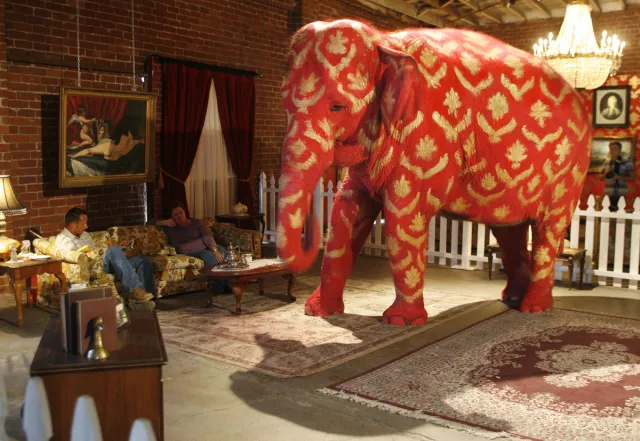

Stake
The giant elephant in the room raised its head towards its sole saviour as he – I – pulled open the door. So much is at stake, it thought to itself.
The room behind the door was a curious one. Certainly not the one I had expected. A narrow alcove blocks most of my peripheral vision, revealing only the gigantic body of the elephant, sitting at the centre of the room. The walls were painted perfectly white, reflecting all light emitted from the incandescent light, almost blinding me at first glance. The brown wooden floor emits a welcoming odour, one that is only present in new houses, one that reminds me of renovations, and perhaps births. Evidently disturbed, the elephant shifts its obese body around, screeching against the floor.
The elephant’s eyes gleamed with tears, its trunk curled into an unnecessary and unnatural spiral. I can’t help but wonder: how long must its trunk extend, should the elephant get tired and relax its muscles? The room would likely be filled – nay, explode – from its sheer unfurled volume. Such was the reason, I recalled, that the Japanese people had an unnatural fear towards spirals – Uzumaki, in their language. The names – Kirie Goshima and Shuichi Saito, and the town of Kurouzu, were all one needed to know before they cowered and even curled up to shield themselves from the curse of the term. The town, destroyed, rebirthed, and then again repeats the same cycle as a part of its curse, never moving forward from its history of mistakes, much like how its houses, which grew more interconnected as the curse’s power strengthened, became inescapable, as it defined the daily lives of its twisted citizens, and did not appear weird at all to anyone within it.
I took one step into the room. One step closer to the elephant inside, and one step beyond the heavy metal door. The door slammed shut behind me, producing a sound akin to that one might expect when a judge hits a gavel. However, depending on the court, the sound of the gavel might sound much softer than that of a metal door slamming shut, despite the former’s strength. Such was the power of silence, decreed in the holiest of books, the Tao Te Ching, written 400 years before the birth of Jesus, by a man equally influential for the Chinese as Jesus for the West – Lao Tzu. His influence was partly thanks to the fact that his title was synonymous with the term “father” in colloquial Chinese, a position thought to be only less powerful and substantial than the emperor – in other words, a person that all should obey almost religiously. More significant, however, was Lao Tzu’s theory of morality and truth, or Tao, as he put it. Besides its obvious attributes shared among all civilizations, such as respect, humility, loyalty, etc., Lao Tzu believed that inaction was key in attaining Tao. Inaction, in that one who knows should not speak; in that one who is bright should remain masked; in that anything that endangers social ties should be considered inconvenient, and rot deep within one’s heart, within a small room that is guarded by a heavy metal door, one which slams shut with a sound a thousand times louder than the gavel of a judge, a thousand times louder than the powerful, silent sound, which sentences criminals and the unwanted to death.
I took one more step into the room. I can see it now, finally, yet very clearly, the objects I was warned about. The alcove receded behind me as the entire room entered my view, bringing about an unrecognizable, terrifying scream, one that completely drowned out the humming of the light. I did not know the source of the horrid noise at first, and it only took a second to realize that I was the one screaming. Fitting, I thought, considering what I just saw.
Twelve bodies kneeled facing the elephant in two arcs, perfectly blocked, previously, by the alcove. Their hands clasped together in front of their mouths, and their eyes remained invisible. The wooden floor is soaked red beside them, some with darker shades than others, as if a careless art student had made an unsalvageable mistake in their piece, and was furiously scrubbing their painting red. A closer inspection reveals, trivially, the “pen” that the art student used – twelve wooden stakes, one driven precisely through the heart of every individual. The corpses’ mouths were uniformly opened wide, as if they were screaming, or perhaps singing a final hymn before leaving the mortal plane. Such a song would have likely made a wonderful symphony, should one overlook the fact that some of the corpses, particularly the ones that compose the left arc, had been turned to mere skeletons. Even the stakes that drove through their hearts started to rot and decompose, the blood around them nothing more than a solidified dark shade of brown. On the other hand, the bodies in the right arc were much more lively, as fresh blood still dripped off the tips of the stakes for many, and in some cases, it even looked like the body might just come back to life the next second, and their mouths would twitch into another horrid scream, or incredible song.
Gasping for air, it took me a few minutes to regain my composure and stop myself from screaming. To be fair, I comforted myself, I was warned about this precise situation. I slowly turned my neck to see the metal door behind me, suppressing the uncontrollable urge to attempt to flee, or at least attempt to open the door once again.
No, I said to myself, I must face this situation with dignity.
Trembling, and attempting to gain control over my own legs once again, I took another step forward. The elephant’s eyes locked onto mine…
“Address me.” It whispered. Its voice was deep, and perhaps coarse. It sounded familiar, but before I could recall the reason, I saw, for a glimpse, the bodies surrounding the elephant – even the skeletons – lowered their heads slightly as the elephant spoke. I looked around frantically, yet no other movement from the bodies could be observed.
With dignity, I told myself, as I put my right leg before my left. The room was not big at all, nearly entirely occupied by the elephant's gargantuan body and trunk, leaving what little space left for only the bodies. As a result, I am already close enough to touch the elephant with my hands. I could not help but extend my right arm, trembling, and with a hint of curiosity, caressed the body of the elephant. At this distance, the depth of the cracks and crevices upon its skin was evident, the end of which remained invisible to all, not even to the light from the incandescent bulb above. Its skin looked calloused, having endured the most trying labour of all – the labour of eternal time.
I lift my gaze from its skin, meeting the eyes of the elephant. With its size, I had to twist my neck and lift my head to an extreme to even manage such a feat. With my touch, its eyes became populated by something else – should one look extremely closely, one would spot, well-hidden behind the tears, a slight, yet bright, flame.
It was hope. The elephant looked hopeful. The moment that such a thought came to my mind, I saw the elephant’s face practically and immediately light up with joy, the flame within its eyes burning so bright, vaporizing what little tears that were left.
“Address me.” The elephant said, with a much higher note. I finally recalled what caused the familiarity in its voice – its voice reminded me of my own father, or perhaps my grandfather. The subtle patterns in the inflections gave it away, forming a verdict only substantiated by its tone of voice. A tone that was deep and harsh, a tone that allowed no space for error, and no consideration, yet a gentle and warm tone. A commanding, yet comforting tone. A terrifying tone.
I was struck with such horror that, while I immediately drew back my hand, for a split second, I forgot to look away from its eyes. When I realized my terrible mistake, it was already too late to be helped. The abyss of the elephant’s deep, black eyes devoured me, as I saw – I saw the question, and its answer.
A man, or perhaps a woman. A child, or perhaps an adult. A European, an Asian… No, an African - sitting in the subway. Sitting in the tram. Sitting on the bus. Sitting in front of a door. Sitting with a sign. Sitting with a bowl. Sitting in a shirt. Sitting in a coat. Sitting – and figures flash by quickly around him. He, or perhaps she, coughed so slowly and with such force that everything around him passed in a blur. He, or perhaps she, breathed so heavily, as water, while those passing by had such light and superficial joy, as the oil floating on top. His, or perhaps her, throat was so parched that it gave out when he tried to make a noise – but a noise was indeed made, yet those around him, or her, in the subway, or the tram, or the bus, or the door, did not appear to wish to stop wholeheartedly. Superficial stops were made, some even dared to look at him, or her, with curiosity and sometimes pity – yet with his, or her, slowness, such superficial stops were effectively no stop at all. The perfect silence was forged, only possible in such a scenario, only possible in such loudness. It produced a harmonious byproduct – the perfect inaction, which, similarly, could only exist in the abundance of swift action. Had Lao Tzu seen, or felt, such silence, coupled with such inaction, he would certainly feel as though his life’s goal had been fulfilled. Nothing endangers societal ties, nothing is inconvenient – within the elephant’s eyes, I saw perfect harmony. A song that is sung by every member of the world, every member – except for the man, or perhaps woman, sitting quietly, coughing, breathing, and trying his, or her, hardest, to make a noise.
I looked hard and curiously at the man’s, or perhaps woman’s, face, for such a long time, that it appeared as though I was as slow as he, or she. After what seemed like eternity, I finally saw it – the most familiar face of all. As I heard another shriek of horror, I recognized the face – it was myself! The shriek of horror only grew, which was not of concern for me at the moment, as I frantically looked around, and saw that all those who were passing by had the same face – the plastered, stoic face of myself.
The shriek of horror finally reached its climax and was creating echoes within my ear, snapping me out of the elephant’s eyes and finally back into the room. Once again, with surprise, I realized that the shriek came from my mouth, and I gasped, attempting to curb it. I breathed heavily, as I looked back at the elephant, who growled deeply, before roaring:
"Address me!"
With its voice still reverberating around the room, and my eyes widened, its trunk began to unfurl in a fashion so elegant that I, briefly, genuinely was overcome by the strong impulse to fulfill its wish. However, my fear was stronger, as a voice cried out within me with a volume louder than even the elephant’s roar: “Do you even understand anything at all?!”
No, I said to myself, of course not. Yet the elephant was still unfurling its trunk, and soon this room would surely explode from the inability to contain it. I looked around again, praying for a solution, and – thank the Lord above – a stake entered my sight, lying between the elephant and the metal door, precisely in between the two arcs formed by the corpses. For some reason, I had missed it when I first entered the room, but that was of no importance now. Like a rabbit making one desperate jump away from its predator, I snatched the stake in my hand and faced the elephant.
“I’m sorry”, I apologized deeply.
Its eyes were filled with tears once more, staring at me with a pleading glance – the same glance that I saw on the man or woman who used it to plead with others to stop wholeheartedly and notice its coarse, faint groan. Again, I was overcome with the intent to throw the stake away, yet I shuddered at the implied alternative, and even the idea of choosing such a path made me firmly grasp the stake and face the sharp end towards my own chest.
“I’m sorry”, I apologized once more, before using all my strength to see to it that the stake was painted wholly red. It was aimed perfectly, piercing through my heart, stopping its beating at once. My soul thus left my body and vanished, no different from the fire being put out by a cold bucket of water, or a puddle that vanished in the presence of the sun. My body’s arms moved very slowly in front of my chest, almost matching the speed of the man or woman I saw. Eventually, my body’s palms clasped together, and my body’s eyelids were tightly shut.
The elephant shed a tear before collapsing onto the floor once again.
The only sound left in the room was the humming of the incandescent bulb above it.
-2025.10.17, Toronto ON, Tony Su
Art Credit: Banksy
Click Me For Document Download as .docx File